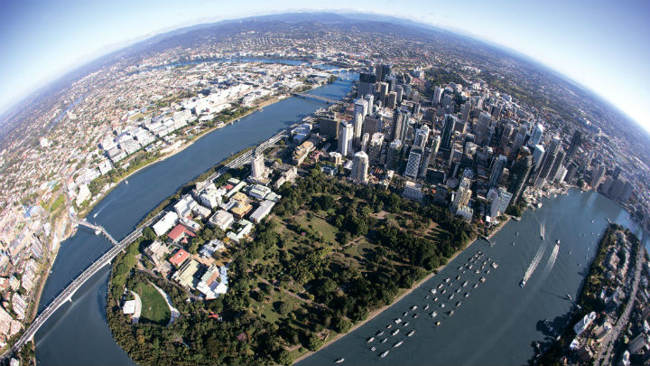

INFORMS-APS 2019, Brisbane Australia
The 20th INFORMS Applied Probability Society Conference, July 3-5, 2019, Brisbane Australia.
We are delighted to announce the 20th INFORMS Applied Probability Society Conference taking place at the Brisbane Convention Centre, Brisbane, Australia, July 3-5, 2019.
The full program is available here.
Queueing Systems: Theory and Applications (QUESTA) will feature a special issue related to the 20th INFORMS Applied Probability Society Conference.
Further information can be found here.
A number of related events are being held before and after the INFORMS-APS conference:
The confirmed plenary speakers for the conference are:
The confirmed tutorial speakers for the conference are:
The conference will also have an open problems session. Registered participants will receive an email with more details after the early bird deadline (May 15).
The following session organisers have been confirmed:
- Ivo Adan, Eindhoven University of Technology, Netherlands
- Nilay Tanik Argon, University of North Carolina, USA
- Alessandro Arlotto, Duke University, USA
- Rami Atar, Technion – Israel Institute of Technology, Israel
- Hayriye Ayhan, Georgia Institute of Technology, USA
- Chaithanya Bandi, Northwestern University, USA
- François Baccelli, University of Texas at Austin, USA
- Yonit Baron, Ariel University, Israel
- Mohsen Bayati, Stanford University, USA
- Sandjai Bhulai, VU University Amsterdam, Netherlands
- John Birge, University of Chicago, USA
- Jose Blanchet, Columbia University, USA
- Onno Boxma, Eindhoven University of Technology, Netherlands
- Peter Braunsteins, University of Queensland, Australia
- Amarjit Budhiraja, University of North Carolina, USA
- Agostino Capponi, Columbia University, USA
- Nan Chen, Chinese University of Hong Kong, Hong Kong
- Asaf Cohen, University of Haifa, Israel
- Jim Dai, Cornell University, USA
- Duy-Minh Dang, University of Queensland, Australia
- Andrew Daw, Cornell University, USA
- Jing Dong, Northwestern University, USA
- Sherwin Doroudi, University of Minnesota, USA
- Jan-Pieter Dorsman, University of Amsterdam, Netherlands
- Antonis Economou, University of Athens, Greece
- Eugene Feinberg, Stony Brook University, USA
- Sergey Foss, Heriot-Watt University, Scotland
- David Goldberg, Cornell University, USA
- Alex Goldenshluger, University of Haifa, Israel
- John Hasenbein, University of Texas at Austin, USA
- Sophie Hautphenne, University of Melbourne, Australia
- Moshe Haviv, Hebrew University of Jerusalem, Israel
- Shane Henderson, Cornell University, USA
- Harsha Honnappa, Purdue University, USA
- Susan Hunter, Purdue University, USA
- Sandeep Juneja, Tata Institute of Fundamental Research, India
- Zeynep Akşin Karaesmen, Koç University, Turkey
- Jussi Keppo, National University of Singapore, Singapore
- Yoav Kerner, Ben-Gurion University, Israel
- Henry Lam, Columbia University, USA
- Lingfei Li, Chinese University of Hong Kong, Hong Kong
- Yunan Liu, North Carolina State University, USA
- Siva Theja Maguluri, Georgia Institute of Technology, USA
- Michel Mandjes, University of Amsterdam, Neterlands
- Pascal Moyal, Université de Lorraine, France
- Sayan Mukherjee, Duke University, USA
- Barry Nelson, Northwestern University, USA
- Mariana Olvera, University of North Carolina Chapel Hill, USA
- Lerzan Ormeci, Koç University, Turkey
- Guodong Pang, Pennsylvania State University, USA
- Raghu Pasupathy, Purdue University, USA
- Oscar Peralta, University of Adelaide, Australia
- Liron Ravner, University of Amsterdam, Netherlands
- Marty Reiman, Columbia University, USA
- Chang-Han Rhee, Northwestern University, USA
- Ad Ridder, VU University Amsterdam, Netherlands
- Fred Roosta-Khorasani, University of Queensland, Australia
- Dan Russo, Columbia University, USA
- Pengyi Shi, Purdue University, USA
- Flora Spieksma, Leiden University, Netherlands
- Mark Squillante, IBM Research – Thomas J. Watson Research Center, USA
- Alexander Stolyar, University of Illinois at Urbana-Champaign, USA
- Wen Sun, University of Southern California, USA
- Baris Tan, Koç University, Turkey
- Neil Walton, University of Manchester, England
- Qiong Wang, University of Illinois at Urbana-Champaign, USA
- Amy Ward, University of Chicago, USA
- Yehua Wei, Boston College, USA
- Adam Wierman, California Institute of Technology, USA
- David Yao, Columbia University, USA
- Nan Ye, University of Queensland, Australia
- Jiheng Zhang, Hong Kong University of Science and Technology, Hong Kong
- Yuan Zhong, University of Chicago, USA
- Enlu Zhou, Georgia Institute of Technology, USA
- Alessandro Zocca, California Institute of Technology, USA
Special Issue in Queueing Systems: Theory and Applications (QUESTA)
Queueing Systems: Theory and Applications (QUESTA) will feature a special issue related to the 20th INFORMS APS conference dealing with general surveys in Applied Probability.
Attendees and session organizers of the conference are welcomed to submit papers (up to 50 pages) surveying advances and existing knowledge of a specific topic in Applied Probability
that lies within the scope of the journal (see below).
The purpose of the issue is to bring attention to the progress in these areas, including recent developments, achievements and standing open problems, especially related to, but not limited by,
topics discussed in talks of the 20th INFORMS APS conference. To prepare such a survey, authors are to submit an expression of interest (EOI), summarizing the area of the survey. The EOI must have
a title, an abstract (up to half a page), and a brief bibliography (up to 15 references) exemplifying the essence of the proposed survey.
Important dates
- August 15, 2019: Deadline for EOI.
- August 31, 2019: Notification of acceptance of survey proposals.
- October 31, 2019: Deadline for drafts for purposes of referee-matching.
- December 31, 2019: Deadline of surveys.
- Peer review will take place in early 2020 and publication around mid-2020.
The Guest Editors of the QUESTA SI, Ross McVinish, Yoni Nazarathy, and Giang Nguyen, are happy to discuss prospective topics, from now until August 15, 2019.
Queueing Systems: Theory and Applications (QUESTA) is a well-established journal focusing on the theory of resource sharing in a wide sense, particularly within a network context.
The journal is primarily interested in probabilistic and statistical problems in this setting. The journal welcomes both papers addressing these issues in the context of some
application and papers developing mathematical methods for their analysis. Among the latter, one would particularly quote Markov chains and processes, stationary processes,
random graphs, point processes, stochastic geometry, and related fields. The prospective areas of application include, but are not restricted to production, storage and logistics,
traffic and transportation, computer and communication systems.
Sponsors
Organizing Committee
- Local and General Arrangements: Yoni Nazarathy, Fred Roosta, Sarat Babu Moka, Russell Tsuchida, Vektor Dewanto, Liam Hodgkinson, Rixon Crane,Yang Liu.
- Program Arrangements: Giang Nguyen, Thomas Taimre, Marijn Jansen.
- Web Arrangements: Ross McVinish.
- Scientific Advisory Committee: Nigel Bean, Dirk Kroese, Phil Pollett, Peter Taylor.
- Queues, Modelling, and Markov Chains: A Workshop Honouring Prof. Peter Taylor: Azam Asanjarani, Sophie Hautphenne, Mark Fackrell, Slava Vaisman, Ilze Ziedins.
- Applied2 Probability: Ivo Adan, Konstanin Avrachenkov, John Boland, Jerzy Filar, David Goldberg, Matthew Holden, Roxanne Jemison, Ross McVinish, Joshua Ross.
- MCM2019 Affiliate: Zdravko Botev.
- A celebration of women in applied probability: Oscar Peralta Gutierrez.
Contact
For more information please email:
informs-aps@uq.edu.au.
Key dates:
- February 28, 2019: Confirmation of organized sessions.
- March 15, 2019: Closing date for student support applications.
- March 31, 2019: Abstract submission closes for all talks.
- April 21, 2019: Confirmation of acceptance of abstract.
- May 15, 2019: Final date for early bird registration.
Recent Applied Probability events in the region in include: